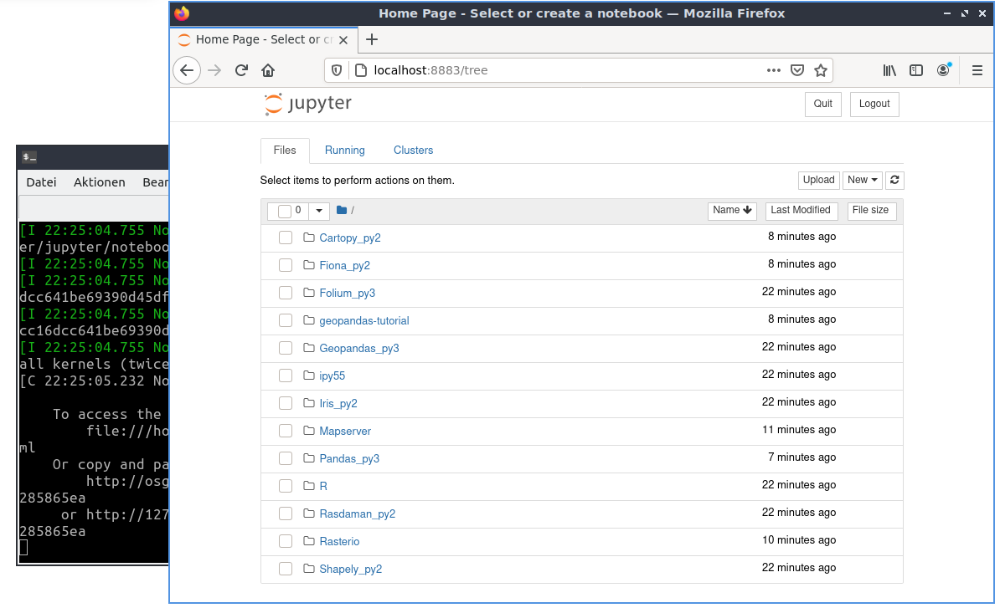
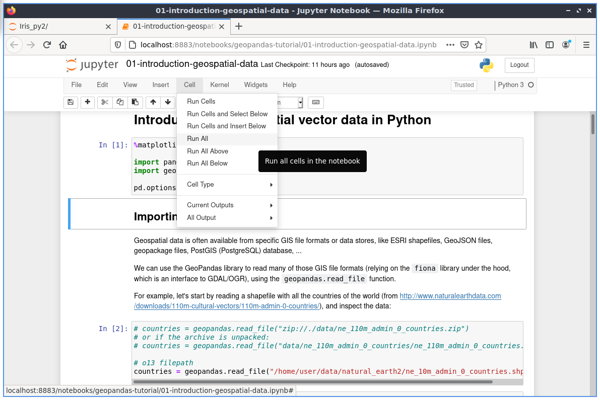
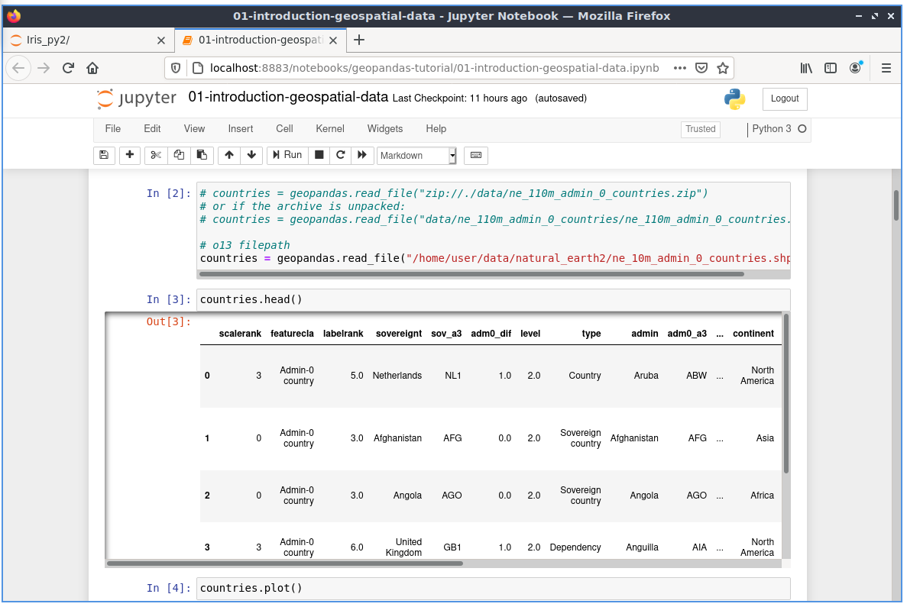
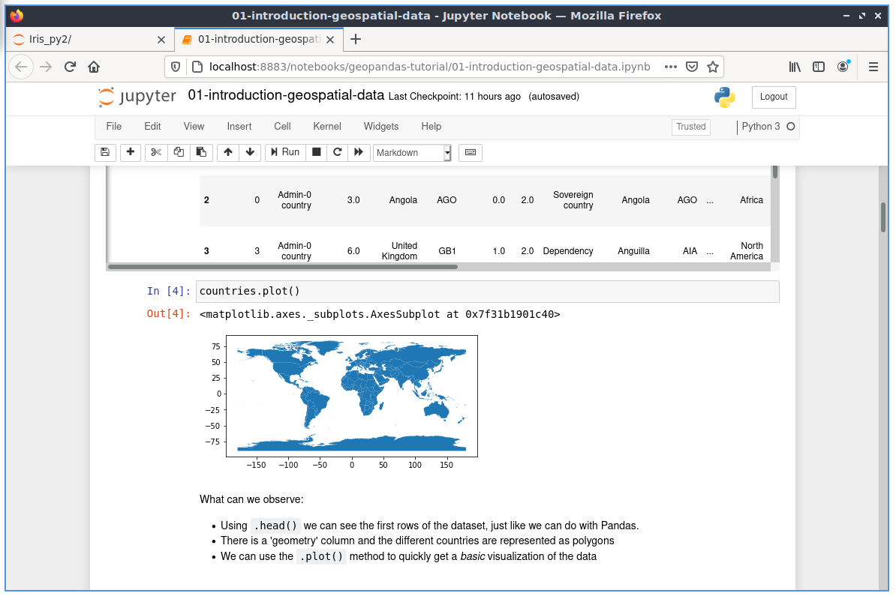

Jupyter Notebook Quickstart¶
The Jupyter Notebook is a web application that allows you to create and share documents that contain live code, equations, visualizations and explanatory text. Uses include: data cleaning and transformation, numerical simulation, statistical modeling, machine learning and much more.
This Quick Start describes how to:
- Start a Jupyter Notebook server
- Load a jupyter notebook
- Interact with python code
Contents
Start the Jupyter server¶
From the application launch menu in the lower left corner.
- Choose Geospatial -> Spatial Tools -> Jupyter Notebook
A terminal window will open and a startup log will begin to scroll. Afterwards a web browser is launched showing the Jupyter Notebook dashboard. From the Jupyter Notebook dashboard you can navigate the directory tree, start new notebooks, create files and directories, as well as rename, delete and upload files.
{kind=link}
Open and execute an existing notebook¶
Let’s open an existing notebook. From the main page click on the directory geopandas-tutorial and choose the Introduction notebook (01-introduction-geospatial-data.ipynb). This is an introduction with many examples on how to use geospatial vector data in Python with geopandas using the Natural Earth2 data.
{kind=link}
The tutorial is made up with explaining text and cells. The cells contain in this case python code, that can be run.
From the toolbar on top of the notebook you can choose different options:
- Cell-> Run Cells: will run the code in the cell with the focus and will move to the next cell.
- Cell-> Run All: will run all the cells and show the results If everything worked as planned you should be able to see the results at the bottom of the page.
Have a look at the results after running all the cells.
{kind=link}
You will see additional Out[] section with different output for example tables, maps or calculations.
In Out[3] you can see the country information as a table.
In Out[4] a plot was generated from all the countries.
{kind=link}
Change code¶
Now let’s change some of the code.
In In [10] a filter was defined for the countries. Only the continent Africa is selected from the countries:
In [10]: africa = countries[countries['continent'] == 'Africa']
Therefore in the plot there is only the continent Africa.
{kind=link}
Change the selection to Asia and rund the two cells again.
In [10]: africa = countries[countries['continent'] == 'Asia']
As result you will see that instead of Africa there will be Asia in the plot.
{kind=link}
What Next?¶
- Discover the other notebooks that are provided with OSGeoLive and find out how to work with Shapely, Rasterio, R, Iris & other software.
- For more information about the jupyter notebook, please refer to the Jupyter Notebooks official documentation.
- More notebook examples are available from the notebook root directory.
- Quick introduction on how to use the Jupyter Notebooks interface: Get started with Jupyter Notebook.